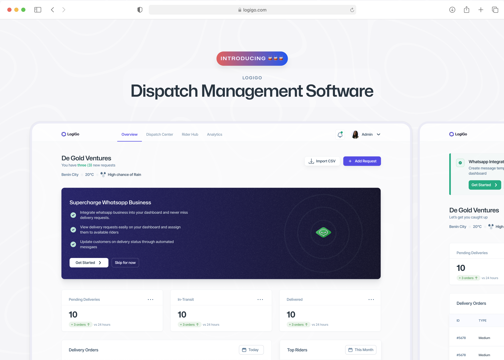
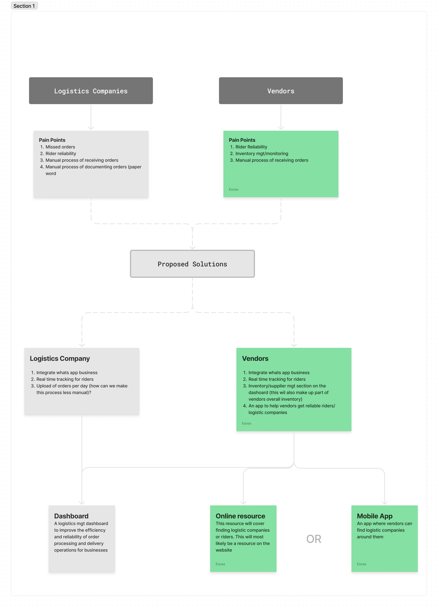
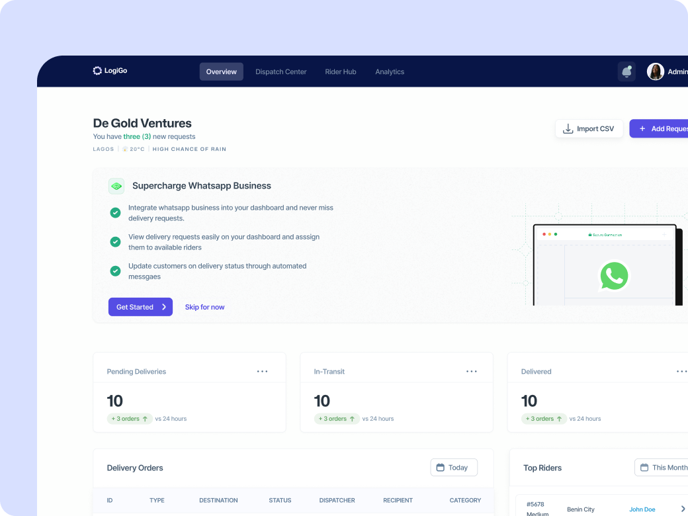
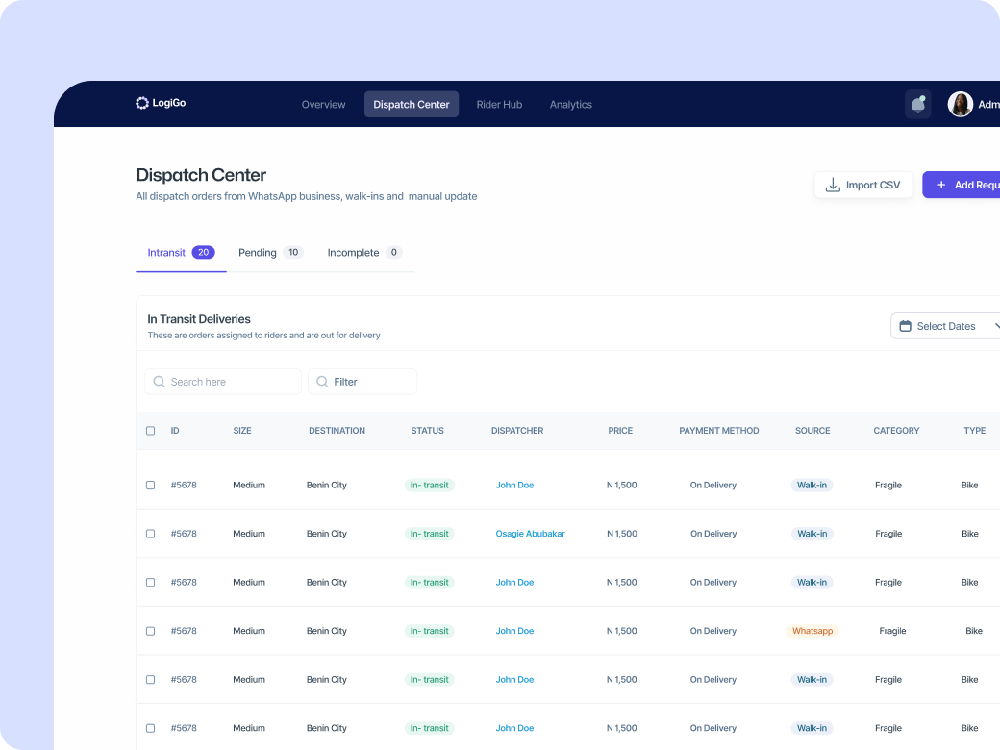
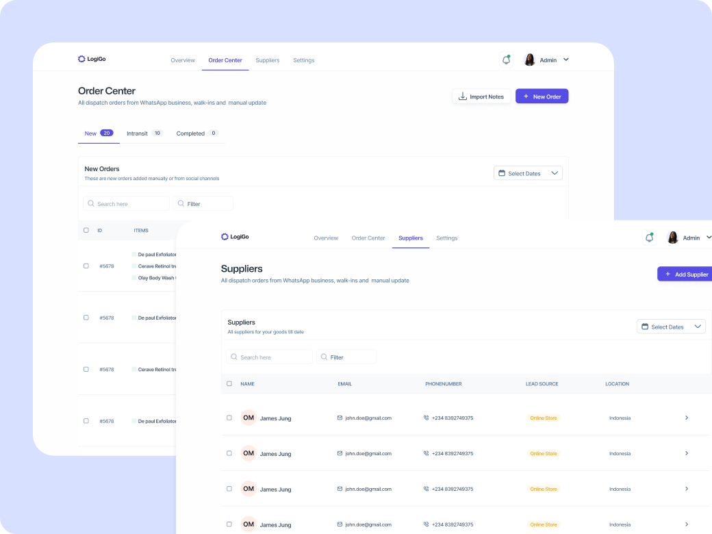
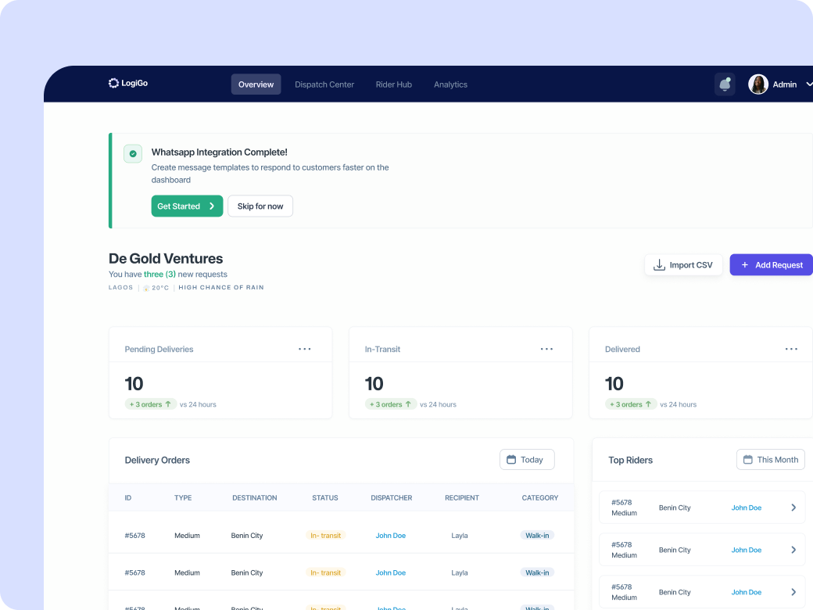
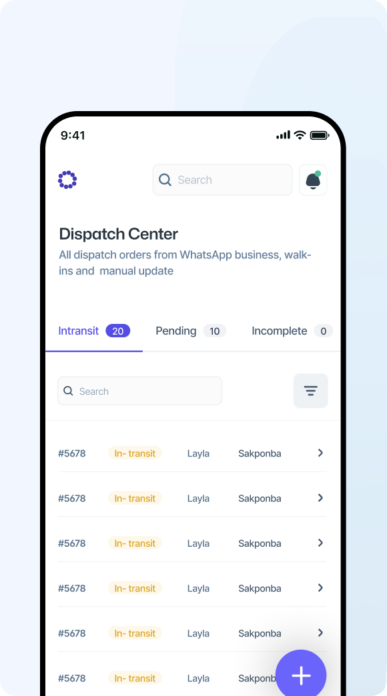

Mapping the full journey from order placement to delivery and post-delivery tracking
We built this for small logistics companies. Halfway through research, we found a second audience that changed the entire product.

Behind every seamless delivery, there's a logistics company working to make it happen on time. The big players have systems for this. But small and mid-sized companies are still running on spreadsheets, paper notes, and WhatsApp messages.
The premise behind Logigo was straightforward. Help these businesses keep tabs on deliveries, manage customer relations, and serve their customers better. But we needed to make sure this was a real problem, not just an assumption.
I started by speaking to small logistics companies to understand how they operate day to day. Not the pitch version of their problems, but the real ones. Where do things actually break down?
It's important to make sure the problems you're solving are ones people actually want fixed, not just ones they've learned to live with.
I mapped the journey from order placement through delivery and post-delivery. The same friction points surfaced in every conversation: missed orders, unreliable riders, no central record of deliveries, and difficulty keeping customers informed.
Mapping the full journey from order placement to delivery and post-delivery tracking
While interviewing logistics companies, we noticed something we hadn't expected. Vendors selling physical products were dealing with almost the same problems. They needed to track orders, manage inventory, and keep customers happy. They just approached it from a different angle.
After synthesizing everything, we landed on three possible directions: a dashboard for logistics companies, an online resource to help vendors find delivery partners, and a mobile app for vendors. The dashboard was the clearest starting point because it addressed the most urgent problems for both audiences.

Mapping pain points from both audiences to see where a single product could serve them both
A dashboard for managing deliveries, tracking riders, and keeping operations visible across both logistics companies and vendors.




Based on research, most vendors work from their phones. They don't sit at a desk. The mobile version gives them access to orders, dispatch requests, and delivery tracking without needing a laptop.
The interface is stripped down to what matters. No feature bloat. Just the things a vendor actually needs while they're working.

The people you think you're building for aren't always the only ones who need it.
We went in thinking we were solving a logistics problem. We came out building for an entire ecosystem. That wasn't the plan, but the research made it unavoidable.
The other thing that stuck with me is simpler. Build for how people actually work, not how you think they should. These businesses run on WhatsApp and phone calls. Instead of asking them to adopt something new, we designed around the tools they were already using. That decision shaped everything.